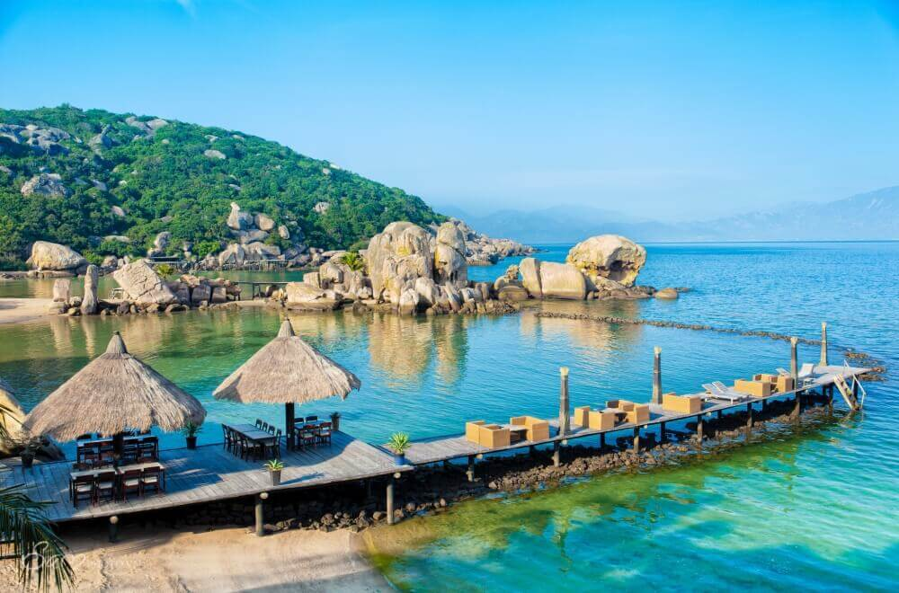

Tứ Bình Cam Ranh – thiên đường “Maldives” hoang sơ của Việt Nam
25/09/2021
Nếu bạn đang tìm một “chỗ trốn” khỏi thành phố xô bồ nhưng những bãi biển đông nghịt làm bạn ngán ngẩm, vậy thì Tứ Bình Cam Ranh chính là lựa chọn không thể bỏ lỡ. Chỉ mới nổi lên gần đây, Tứ Bình vẫn giữ được vẻ đẹp nguyên sơ của nó, chắc chắn […]
Review I-Resort Nha Trang - Điểm đến tuyệt vời cho ngày hè
25/09/2021
Đến với thành phố biển Nha Trang, khách du lịch không thể không ghé thăm I-resort – một trong những địa điểm vui chơi và nghỉ dưỡng chăm sóc sức khỏe “xịn xò” nhất tại đây. Với mục tiêu trở thành khu du lịch cao cấp, suối khoáng I-resort Nha Trang tận dụng nguồn tài […]
ABOUT ME
Hướng dẫn viên du lịch Nha Trang với hơn 10 năm kinh nghiệm. Chuyên chia sẻ các tips và kinh nghiệm khám phá du lịch.
BÀI VIẾT MỚI
- Thoải mái du hí với bí kíp du lịch Nha Trang tự túc từ A-Z
- Tứ Bình Cam Ranh - Thiên đường "Maldives" hoang sơ của Việt Nam